Next-generation critical metal components through AI-driven manufacturing
My research vision is for AI-designed materials and parts to be not only high-performing but also manufacturable,
so that their benefits reach industry.
Critical metal components, such as the blisks of aircraft engines and power-generation turbines, operate under extreme
temperatures and loads. A blisk needs fatigue and burst resistance near its bore but creep and oxidation resistance at
its blades, more than a single alloy can give. Multi-material components place the right alloy where it is needed,
and AI-aided design can now explore the huge design space this opens.
Two gaps stand between these designs and real parts:
AI designs seldom consider manufacturing limits, so the parts can crack or form brittle phases.
Additive manufacturing cannot yet place each material accurately: melt-pool mixing and geometric errors shift the composition.
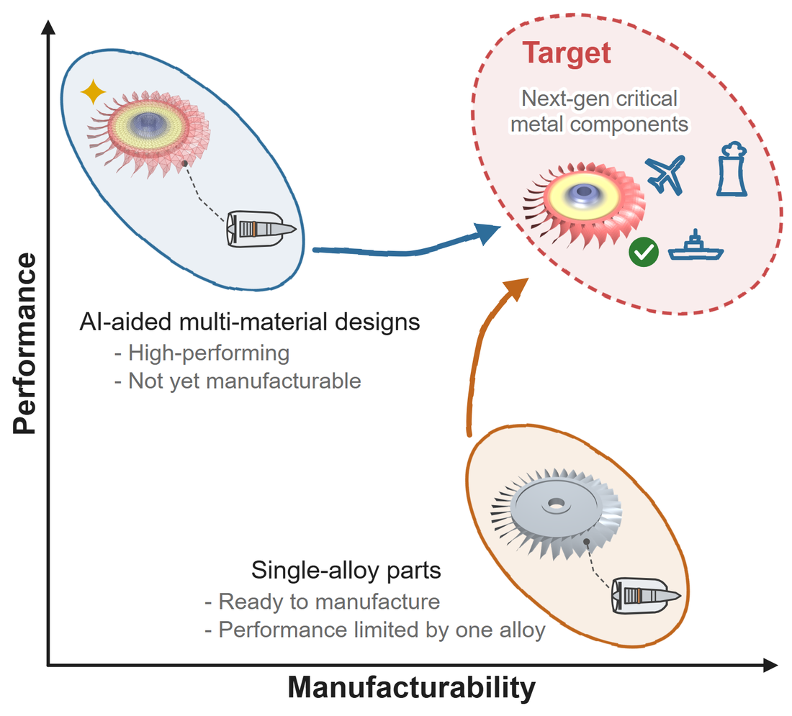
Single-alloy parts are easy to make but limited by one alloy. AI-aided multi-material designs perform well but are not yet manufacturable. My lab aims for both.
The plan at a glance
Two research directions
{% include scales.html %}
Direction 1
AI design of manufacturable multi-material components
I have shown that placing two steels in one part creates properties neither alloy has alone. What is missing is a
systematic way to decide where each material should go, while avoiding compositions that form defects.
My lab will build manufacturability into generative AI design: fast surrogate models of phase formation and of the
printing process will steer the AI away from brittle phases, cracking and distortion.
AI-driven additive manufacturing for accurate material placement
A multi-material design is only useful once it is built with each material in the right place. I have used machine
learning to print a single alloy to tight dimensional accuracy; multi-material parts are a much harder problem.
My lab will tackle it in two stages: before printing, toolpath planning that limits heat build-up and material
mixing; during printing, closed-loop control in which AI fuses multi-modal sensors, including composition
sensing, to keep the build on target.
Outcome: parts that perform as designed, with the build record needed to certify them
Long-term vision
AI-managed manufacturing
In the long term, I will extend this work from multi-material additive manufacturing to AI-managed manufacturing
workflows, in which design, manufacturing, post-processing and certification are planned and controlled as one system.
The AI² Lab will also train engineers who master both conventional and AI design principles.
Past experience
The foundation for each direction
What I have built so far, grouped by the research direction it supports. Full project details follow below.
Published marks peer-reviewed results; Ongoing marks current, unpublished work.
Now at MITboth directions
Functionally graded turbine blisk
Ongoing at MIT
Design, fabrication and testing of a component-level, functionally graded gas-turbine blisk (DARPA METALS program),
using a planner that co-optimizes toolpath and composition for multi-material DED.
AI: bilevel optimization
Direction 1multi-material design
Multi-material metals with new properties
Published
Bi-metallic 316L/17-4PH steels whose ductility and strength rise together (27% and 11%), explained by a new
confined-necking mechanism (Acta Materialia 2026).
Multi-metal parts with magnetic, information-encoding, sealing and mechanical functions, with two patent applications
(MetalMat 2026).
Ongoing Radial bi-metallic materials for ultra-high-speed impact (manuscript submitted).
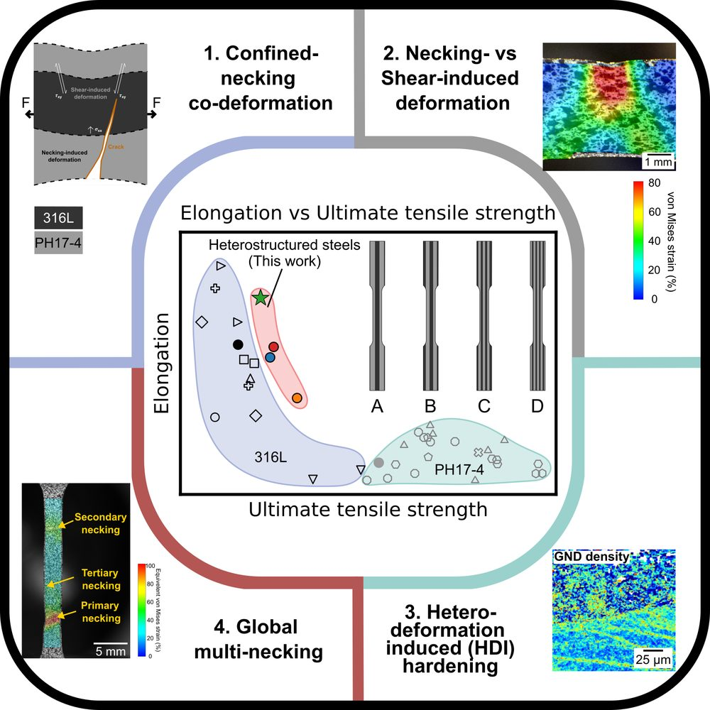
Direction 1AI design
AI materials design
Published
From target mechanical properties directly to 3D microstructures, with a 3D convolutional neural-network surrogate
and a genetic algorithm (Materials Today 2023);
co-author on active learning for NiCoCr alloy discovery in AM
(npj Advanced Manufacturing 2026).
AI: 3D-CNN surrogate + genetic algorithm · active learning
Direction 2machine & process
Multi-material DED machine and AI process optimization
Published
Designed and built a full-size multi-material DED machine. A machine-learning inverse process optimization framework
(AIDED) prints to errors of 1.75% and 12.04% in the scan and build directions
(Additive Manufacturing 2025).
Invited review of composition engineering by DED
(Additive Manufacturing 2026).
Ongoing at MIT A hybrid laser powder bed fusion + inkjet process for voxel-level, in-situ alloying.
AI: machine learning + genetic algorithm
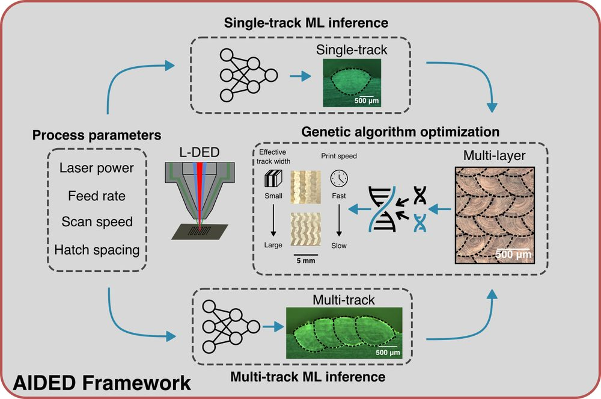
Direction 2sensing & control
Melt-pool sensing and closed-loop control
Published
Mechanism and quantification of melt-pool shape in laser DED, combining CFD with in-situ high-speed infrared imaging
(J. Manufacturing Processes 2025, co-first author);
co-author on ML-aided keyhole simulation (IJHMT 2025).
Ongoing Deep-learning closed-loop control of DED (manuscript in submission).
Magnetic-field-assisted DED observed by in-situ synchrotron X-ray imaging with Prof. Peter D. Lee at UCL (manuscript in submission).
AI: image analysis & learned control
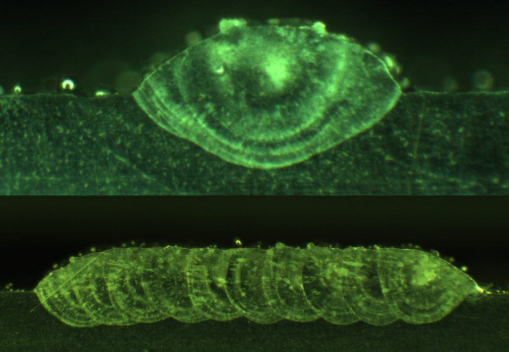
Project details · ongoing
Current projects
Work in progress at MIT and with collaborators. Results here are unpublished; status is noted for each project.
My toolpath planner: blisk surfaces coloured by alloy (IN718, Monel K-500, INCOLOY 909) beneath the DED nozzle.
MIT · DARPA METALS program
Functionally graded gas-turbine blisk
A blisk (bladed disk) needs different properties in different places: strength and fatigue resistance at the bore,
different performance at the rim and blades. With Prof. Zachary Cordero, I am designing, fabricating and testing a
component-level blisk whose alloy changes radially (IN718 → INCOLOY 909 → Monel K-500), built by multi-material DED.
Built a planner that co-optimizes the toolpath and the composition for the whole blisk, accounting for dilution between tracks and heat build-up.
AI: bilevel optimization
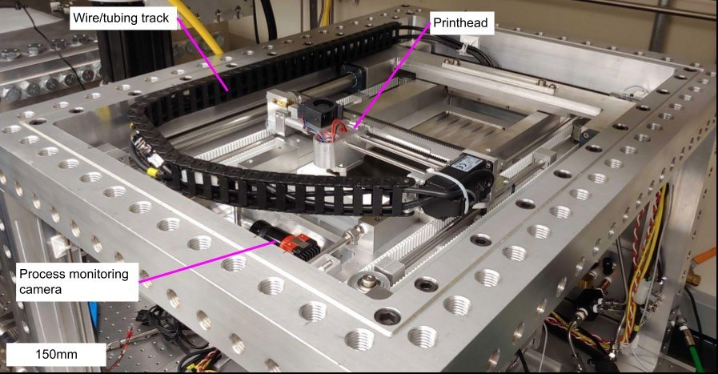
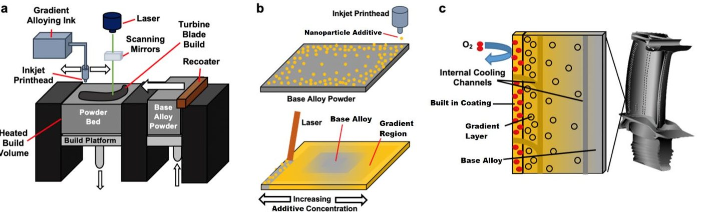
HAMR3 hybrid machine and process concept. Images: Hart group (Z. Kutschke, MIT S.M. thesis, 2023).
MIT · Mechanosynthesis Group
Hybrid inkjet + laser powder bed fusion
Graded metals made by DED are limited to millimetre resolution, and powder bed fusion has so far graded composition only
layer by layer. In Prof. A. John Hart's group I am developing a hybrid process that jets nanoparticle-loaded inks onto each
powder layer before the laser melts it, so the alloy forms in situ, voxel by voxel.
Goal: smooth in-plane composition gradients at powder bed fusion resolution.
A heated build plate supports crack-prone alloys such as refractory metals for propulsion and energy.
In-situ synchrotron X-ray imaging of an IN718 melt pool on 316L under a magnetic field.
UCL · manuscript in submission
Magnetic fields as a melt-pool actuator
A static magnetic field adds a new force inside the melt pool: thermoelectric currents at the solid–liquid boundary interact with
the field and drive flow exactly where the microstructure forms. With Prof. Peter D. Lee at University College London, I used
in-situ synchrotron X-ray imaging to watch DED of 316L stainless steel and IN718 under a magnetic field.
Direct evidence of thermoelectric magnetohydrodynamic (TEMHD) flow in DED.
Next: use the field as an extra control input for melt-pool shape, dilution and microstructure.
The same turbine-sector part built without (left) and with (right) closed-loop control.
U of T · manuscript in submission; patent application in preparation
Deep-learning closed-loop control of DED
Open-loop DED drifts as heat builds up in the part. On the DED platform I built at the University of Toronto, a deep-learning model reads
images of the build and adjusts laser power on the fly to keep each track on target.
1st Place, ASM International IMAT Materials Venture Challenge (2025).
Funded in part by a Connaught Innovation Award (2023).
AI: learned feedback control
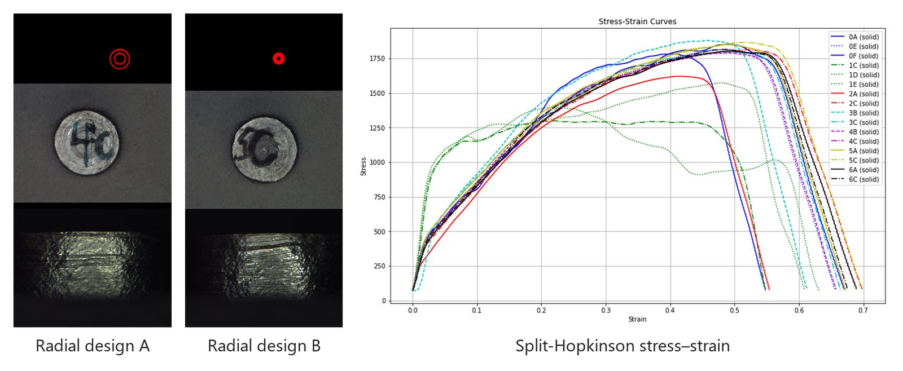
Radial bi-metallic samples after split-Hopkinson bar impact, and their dynamic stress–strain curves.
U of T · manuscript submitted
Radial bi-metals under ultra-high-speed impact
Strength and ductility usually trade off, and the trade-off is harshest under impact. Building on the confined-necking
mechanism, I designed radial bi-metallic architectures made by DED that overcome the strength–ductility trade-off under
ultra-high-speed impact.
Presented at the 155th TMS Annual Meeting (2026).
Project details · published
Published projects
Custom multi-material directed energy deposition (DED) platform
Laboratory for Extreme Mechanics & Additive Manufacturing, University of Toronto
I led the design and construction of a full-size DED system from scratch. It has a 1 kW IPG fiber laser, two powder hoppers
for multi-material deposition, and a user-friendly control interface, and it prints 316L and 17-4PH stainless steels,
nickel superalloys and more. A CCD camera and a high-speed infrared camera monitor the melt pool in situ.
This platform produced the heterostructured bi-metallic steels and multifunctional parts below. On it we are also developing an
AI-powered closed-loop controller that reads images of the build and adjusts laser power on the fly
(unpublished; see ongoing projects).
Recognition: 1st Place, ASM International IMAT Materials Venture Challenge (2025); Connaught Innovation Award (2023).
Manuscript in submission; US patent application in preparation.
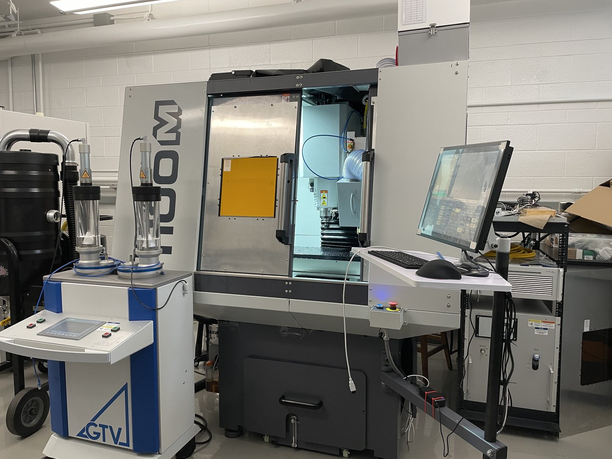
The custom multi-material DED system.
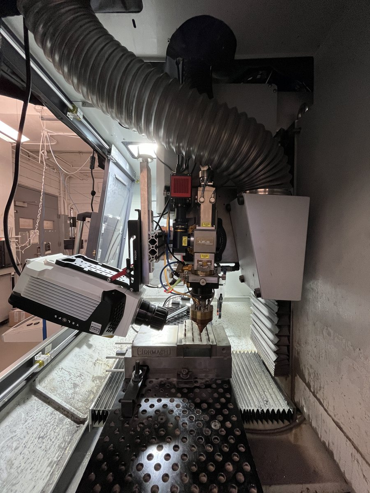
Deposition head and in-situ monitoring camera inside the build chamber.Automated printing and image capture inside the build chamber.Deposition with (left) and without (right) AI-powered closed-loop control (unpublished).
AIDED: accurate inverse process optimization for laser DED
Laboratory for Extreme Mechanics & Additive Manufacturing, University of Toronto
Finding good process parameters for DED, and for additive manufacturing in general, is slow and expensive, yet it decides
build quality, cost and material waste. AIDED uses machine learning to predict melt-pool and track geometry from process
parameters, and a genetic algorithm to search inversely for the parameters that give a target geometry, from single tracks
to multi-track layers and multi-layer builds. It finds optimal parameters for given objectives within 1–3 h, and
transferred from 316L to pure Ni with one-fifth of the data.
AIDED framework overview.
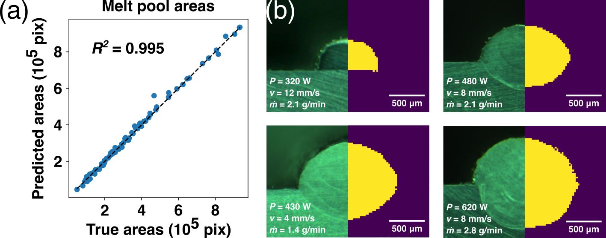
Predicting single-track melt-pool cross-sections.
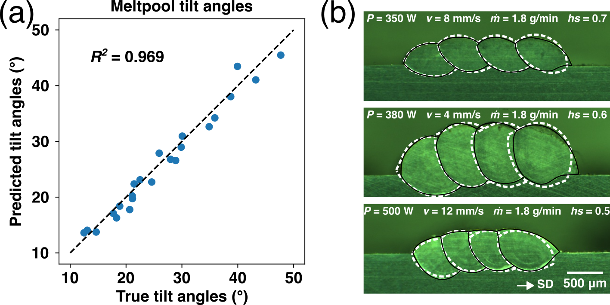
Predicting multi-track cross-sections.
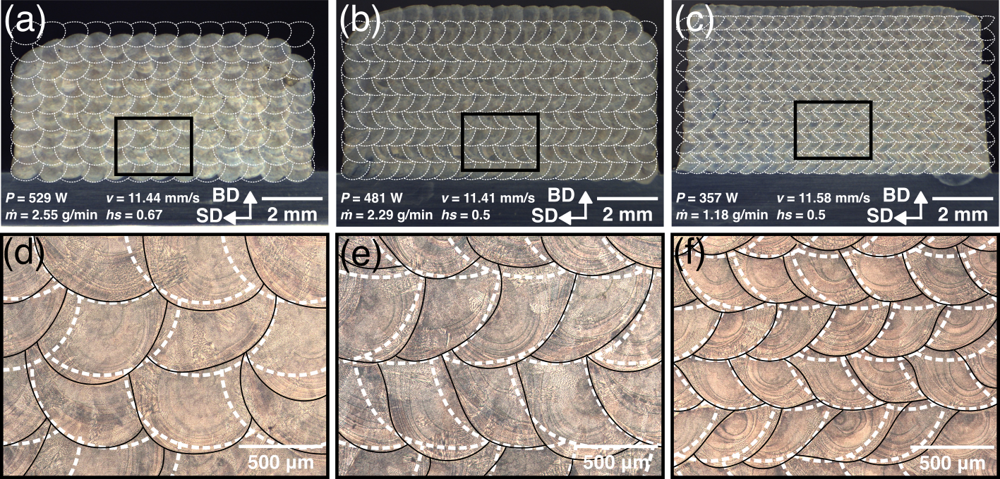
Predicting multi-layer builds.
Shang, X., Talbot, A., Li, E., Wen, H., Lyu, T., Zhang, J., & Zou, Y. (2025). Accurate inverse process optimization framework in laser directed energy deposition.
Additive Manufacturing, 102, 104736.
Code
Confined necking and improved tensile ductility in heterostructured bi-metallic steels
Laboratory for Extreme Mechanics & Additive Manufacturing, University of Toronto
Using DED, we made a new type of mesoscale heterostructured material: bi-metallic steels that combine 316L and 17-4PH stainless
steels, which have very different strength and ductility. By tuning the ratio and arrangement of the two steels, we improved
tensile ductility, ultimate tensile strength and yield strength over 316L by 27.3%, 11.5% and 1.8%, respectively. The gains come from
(i) confined-necking co-deformation, where 316L confines and delays the necking of 17-4PH and gives the whole sample more work hardening;
(ii) a switch between necking-induced and shear-induced failure; and (iii) hetero-deformation-induced (HDI) hardening.
Deformation mechanisms in mesoscale heterostructured steels made by DED.
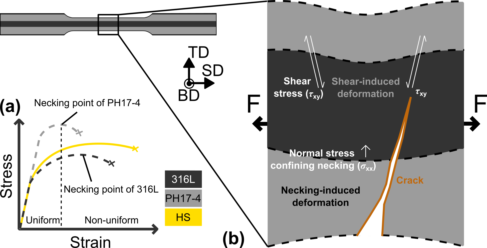
The confined-necking co-deformation mechanism.
Shang, X., Dash, S. S., Shao, C., Lang, L., … & Zou, Y. (2026). Confined necking and improved tensile ductility in heterostructured bi-metallic steels made by additive manufacturing.
Acta Materialia, 121952.
Additive manufacturing of multi-metallic materials for multifunctionality
Laboratory for Extreme Mechanics & Additive Manufacturing, University of Toronto
Multifunctional materials perform several useful functions without complex joints. Metallic ones are attractive for their strength
and durability but hard to design and make, because several metals must be integrated during manufacturing. DED can deposit
different alloys exactly where they are needed. With carefully programmed toolpaths, we demonstrated four multifunctional metal parts:
(i) tunable magnetic lifting force, (ii) information embedded securely and durably as a material fingerprint, (iii) improved
ferrofluidic seals, and (iv) programmable mechanical properties. Two US patent applications arose from this work.
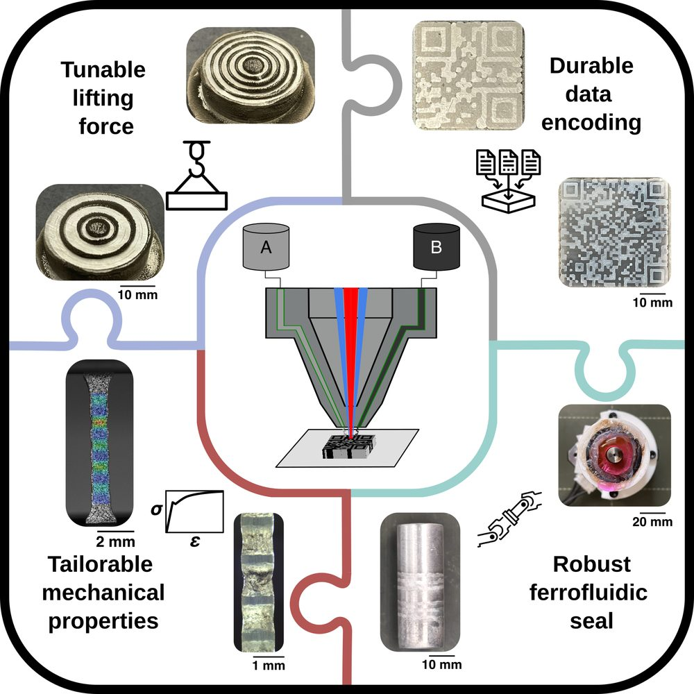
Four multifunctional multi-metal parts made by DED.Reading a QR code embedded inside a metal part made by DED.
Shang, X., Li, E., Dash, S. S., Talbot, A., & Zou, Y. (2026). Additive manufacturing of multi-metallic materials to achieve multi-functionality.
MetalMat, 3(1), e70032.
Tailoring the mechanical properties of 3D microstructures
Laboratory for Extreme Mechanics & Additive Manufacturing, University of Toronto
Designing a material for a specific application requires capturing complex process–structure–property relationships.
Finding microstructures inversely from target mechanical properties is especially hard because the design space is so large.
We built an end-to-end framework that handles both forward prediction and inverse search: a 3D convolutional neural network
predicts stress–strain response from a 3D microstructure, and a genetic algorithm searches for microstructures that meet
target properties, cutting the time from target properties to a candidate microstructure.
The deep learning + genetic algorithm framework.
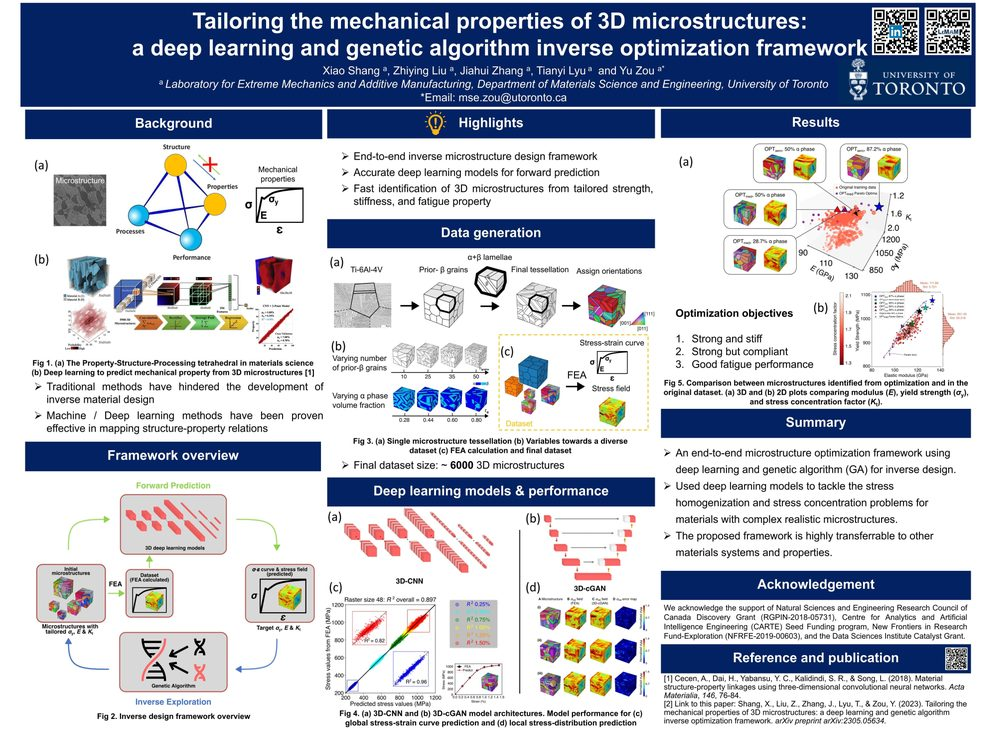
This poster won a Digital Discovery Poster Prize at Accelerate 2023.
Shang, X., Liu, Z., Zhang, J., Lyu, T., & Zou, Y. (2023). Tailoring the mechanical properties of 3D microstructures: A deep learning and genetic algorithm inverse optimization framework.
Materials Today, 70, 71–81.
Code
Mechanism and quantification of melt-pool morphology in laser DED
Laboratory for Extreme Mechanics & Additive Manufacturing, University of Toronto
Melt-pool shape sets track geometry, dilution and defects in DED. Combining computational fluid dynamics with in-situ
high-speed infrared imaging, we explained how the melt pool evolves during single-track deposition
and quantified its morphology, the kind of process model that feeds the design and control work in my research plan.
Melt-pool cross-sections from laser DED.
Zhang, J.*, Shang, X.*, … & Zou, Y. (2025). Mechanism and quantification of melt pool morphology evolution in single-track fabrication by laser directed energy deposition.
Journal of Manufacturing Processes, 156, 556–568. *Co-first authors.
Bistable auxetic metamaterials (BAMs) are perforated periodic structures with a negative Poisson's ratio. Under tension, a BAM expands
to a second stable state through a large shape change, which normally relies on a soft elastomer; made from a rigid polymer or a metal,
its ligaments rupture. We extended the BAM architecture to rigid base materials and used experiments and simulations to assess
performance, bistability and durability over 10,000 cycles. Geometric maps show how the main architectural descriptors control behaviour,
opening BAMs to a wide range of materials, including elastic–perfectly plastic and potentially brittle ones.
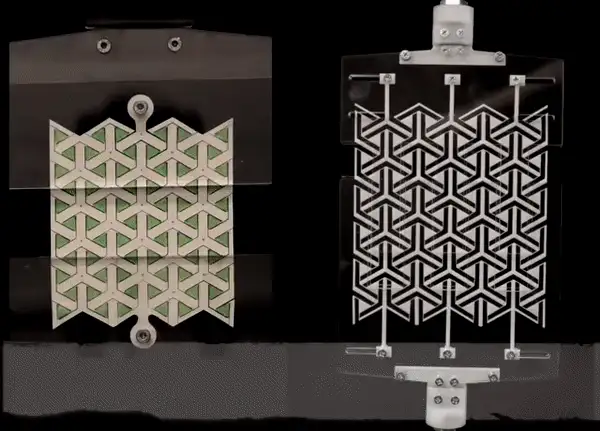
Bistable auxetics made of soft (left) and rigid (right) base materials.
Aero-engine and power-generation turbines: graded, repairable hot-section parts and blisks.
Naval, marine and defence hardware: in-country, closed-loop repair of propulsion and engine components.
Nuclear and energy: graded steel–nickel joints, and corrosion-resistant cladding with controlled dilution.
Critical materials: graded designs that place scarce elements (Ni, Co, Nb) only where they are needed.
Extreme environments: impact-tolerant and high-temperature structures validated by mechanics.
What I bring to a lab
Machine building: designed and built a full-size multi-material DED system (1 kW laser, dual powder feed, CCD and high-speed IR monitoring) from scratch; now developing a hybrid LPBF + inkjet process at MIT.